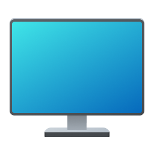
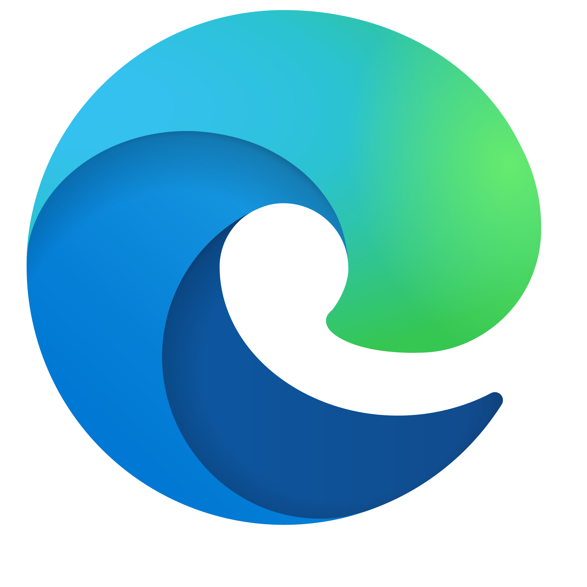
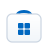

Microsoft Edge: Tiempo de CPU 12 min, Red 2.4 MB
Explorador: Tiempo de CPU 4 min, Red 0.0 MB
Terminal: Tiempo de CPU 1 min, Red 0.1 MB
Windows PowerShell
Copyright (C) Microsoft Corporation. Todos los derechos reservados.
Escriba 'help', 'dir', 'winfetch', o 'Get-Process' para comenzar.
Elige entre el tema Claro de Windows 11 o el tema Oscuro para ventanas y barra de tareas.
Edición: Windows 11 Pro
Versión: 23H2
Compilación del SO: 22631.3007
Experiencia: Paquete de experiencia de características de Windows
Genera ideas, redacta borradores y resuelve consultas complejas al instante.
Transparencias sutiles, esquinas redondeadas y tipografía moderna en todas las ventanas.
